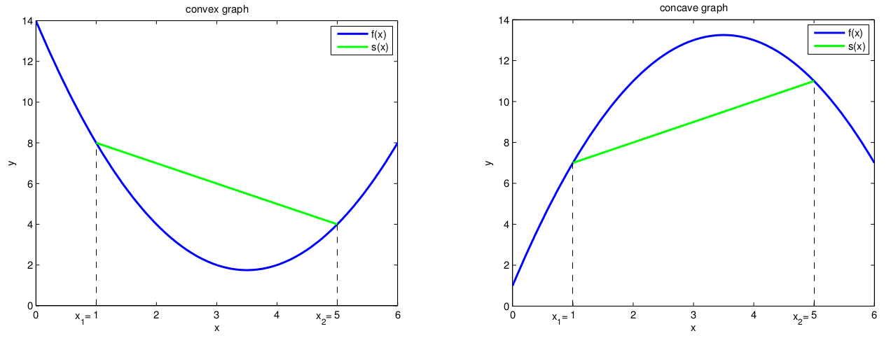
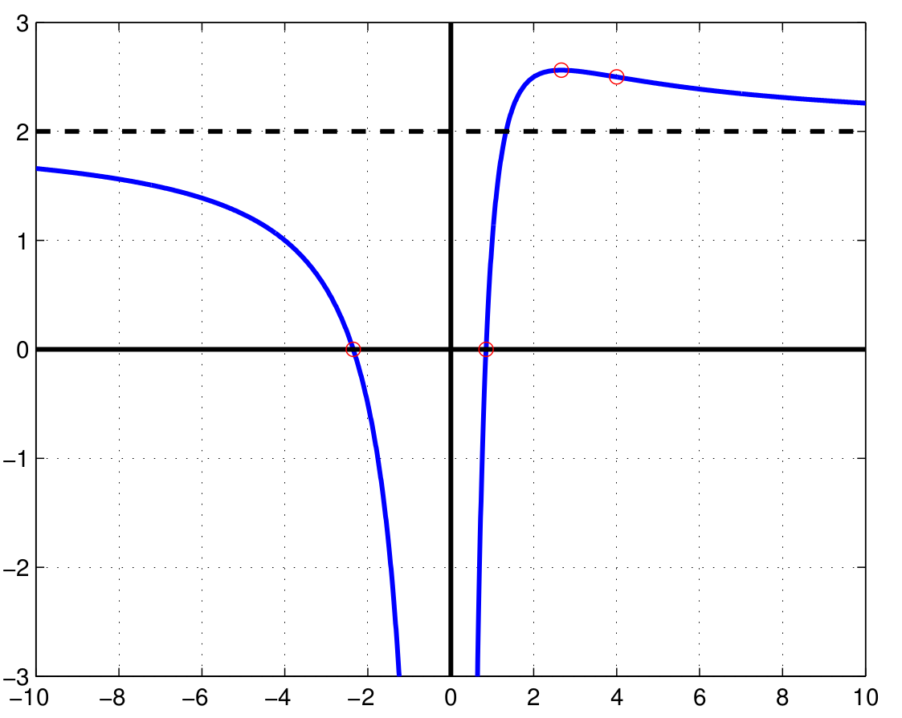

Higher Derivatives
Taking derivatives of derivatives of differentiable functions.
Discover Bridges #
Click on an arrow to get a description of the connection!
Click on an arrow to get a description of the connection!
Show requirements
| Concept | Content |
|---|---|
| Differentiability | How to quantify the rate of change of a function. |
Show consequences
| Concept | Content |
|---|---|
| Taylor's Theorem | An approximation method for differentiable functions. |
Study Higher Derivatives #
Here we consider derivatives of derivatives (of derivatives ...) and discuss consequences for the search for local extrema of functions.
Definition 1. If the derivative of a function is
differentiable, we call \((f')'\) the second
derivative. The \(n\)-th
derivative of a function is inductively defined as the derivative
of the \(n-1\)-th derivative.
For the second derivative at \(x_0\),
we write \(f''(x_0)\) or \(\frac{d^2}{dx^2}f(x_0)\). The \(n\)-th derivative is denoted by \(f^{(n)}(x_0)\) or \(\frac{d^n}{dx^n}f(x_0)\).
We call a function \(f:I\to\mathbb{R}\)
\(n\)-times differentiable if
\(f^{(n)}(x)\) exists for all \(x\in I\).
Furthermore we call a function \(f:I\to\mathbb{R}\) \(n\)-times continuously differentiable
if \(f^{(n)}:I\to\mathbb{R}\) exists
and is continuous.
Theorem 2. Let \(I:=[a,b]\) and \(f:I\to\mathbb{R}\) be differentiable. Furthermore let \(x_0\in I\) such that \(f'(x_0)=0\) and \(f'\) is differentiable in \(x_0\). Then
if \(f''(x_0)>0\), then \(f\) has a local minimum in \(x_0\);
if \(f''(x_0)<0\), then \(f\) has a local maximum in \(x_0\).
Proof: We only show the case \(f''(x_0)>0\) (the opposite case is analogous). By definition, we have \[f''(x_0)=\lim_{x\to x_0}\frac{f'(x)-f'(x_0)}{x-x_0}>0.\] Since \(f'\) is continuous in \(x_0\), we have that there exists some \(\varepsilon>0\) such that for all \(x\in I\backslash\{x_0\}\) with \(|x-x_0|<\varepsilon\) holds \[\frac{f'(x)-f'(x_0)}{x-x_0}>0.\] Since \(f'(x_0)=0\), we have that \[\begin{aligned} f'(x)<0&\quad\text{for all }x\in(x_0-\varepsilon,x_0),\\ f'(x)>0&\quad\text{for all }x\in(x_0,x_0+\varepsilon). \end{aligned}\] Therefore, \(f\) is monotonically decreasing in \((x_0-\varepsilon,x_0)\) and monotonically increasing in \((x_0,x_0+\varepsilon)\). Therefore, \(f\) has a local minimum in \(x_0\).\(\Box\)
Remark 3. Note that in the case \(f''(x_0)=0\), we cannot make a decision whether \(f\) has a local extremum there. For instance, consider the three functions \(f_1(x)=x^3\), \(f_2(x)=x^4\) and \(f_3(x)=-x^4\). We have \(f_1'(0)=f_2'(0)=f_3'(0)=0\) and, furthermore, \(f_1''(0)=f_2''(0)=f_3''(0)=0\). However, \(f_1\) has no local extremum in \(0\), \(f_2\) has a local minimum in \(0\) and \(f_3\) has a local maximum in \(0\).
Example 4.
Consider the rational function \[f(x)=\frac{x(x+5)}{x-4}=x+9+\frac{36}{x-4}.\] It can be easily seen that \(f\) has a first order pole at \(x_0=4\).
The first two derivatives of \(f\) are given by \[f'(x)=\frac{x^2-8x-20}{(x-4)^2}=\frac{(x+2)(x-10)}{(x-4)^2},\qquad f''(x)=\frac{72}{(x-4)^3}.\] The zeros of \(f\) are given by \(x_1=0\) and \(x_2=-5\).
Now we determine the set of local extrema: We have that \(f'(x)=0\) is only fulfilled for \(x_3=-2\) and \(x_4=10\). In this case, we have \(f''(x_3)=-\frac13<0\) and \(f''(x_4)=\frac13>0\). As a consequence, \(f\) has a local maximum in \(x_3=-2\) and a local minimum in \(x_4=10\). We further have\(x\in(-\infty,-2)~\Rightarrow f'(x)>0\), i.e., \(f\) is strictly monotonically increasing in \((-\infty,-2)\);
\(x\in(-2,4)~\Rightarrow f'(x)<0\), i.e., \(f\) is strictly monotonically decreasing in \((-2,4)\);
\(x\in(4,10)~\Rightarrow f'(x)<0\), i.e., \(f\) is strictly monotonically decreasing in \((4,10)\);
\(x\in(10,\infty)~\Rightarrow f'(x)>0\), i.e., \(f\) is strictly monotonically increasing in \((10,\infty)\).
\(f(x)=\sin(x)\). The zeros are given by \[\{0,\pi,-\pi,2\pi,-2\pi,3\pi,-3\pi,\ldots\}=\{n\pi\;|\;n\in\mathbb{Z}\}.\] The first two derivatives are given by \(f'(x)=\cos(x)\), \(f''(x)=-\sin(x)\). The zeros of \(f'\) are given by \[\left\{\frac\pi2,-\frac\pi2,\frac{3\pi}2,-\frac{3\pi}2,\frac{5\pi}2,\frac{5\pi}2,\ldots\right\}=\left\{\frac{2n+1}2\pi\;|\;n\in\mathbb{Z}\right\}.\] For \(x_n=\frac{2n+1}2\pi\), we have \(f''(x_n)=-\sin(\frac{2n+1}2\pi)=(-1)^{n+1}\). As a consequence, \(\sin\) has a local maximum in \(x_n=\frac{2n+1}2\pi\) if \(n\) is even and a local minimum in \(x_n=\frac{2n+1}2\pi\) if \(n\) is odd.
Definition 5 (Convexity/Concavity). A function \(f:[a,b]\rightarrow \mathbb{R}\), \(a,b\in\mathbb{R}\), \(a<b\), is called convex, if for all \(x_1<x<x_2\) in \([a,b]\) holds \[\label{eq:convex} f(x) \leq \frac{f(x_2)-f(x_1)}{x_2-x_1}\cdot(x-x_1)+f(x_1)\ .\] It is called concave, if for all \(x_1<x<x_2\) in \([a,b]\) holds \[\label{eq:concave} f(x)\geq \frac{f(x_2)-f(x_1)}{x_2-x_1}\cdot(x-x_1)+f(x_1)\ .\] If the inequalities in Definition 5 are strict then \(f\) is called strictly convex/concave.
Geometrically this means that the graph of a convex (concave) function \(f:[a,b]\rightarrow \mathbb{R}\) restricted to any subinterval \([x_1,x_2]\) of \([a,b]\) lies below (above) the secant \[s(x):=\frac{f(x_2)-f(x_1)}{x_2-x_1}\cdot(x-x_1)+f(x_1) \ .\]

Theorem 6. Let \(f:[a,b]\rightarrow \mathbb{R}\), \(a,b\in\mathbb{R}\), \(a<b\), be 2-times differentiable.
If \(f''(x)\geq 0\) for all \(x\in~(a,b)\) , then \(f\) is convex.
If \(f''(x)>0\) for all \(x\in~(a,b)\) , then \(f\) is strictly convex.
If \(f''(x)\leq 0\) for all \(x\in~(a,b)\) , then \(f\) is concave.
If \(f''(x)<0\) for all \(x\in~(a,b)\) , then \(f\) is strictly concave.
Proof: We only prove a). The other results follow analogously. Let \(x_1<x<x_2\) in \([a,b]\). Since \(f''\geq 0\) we know that \(f'\) is monotonically increasing. By the intermediate value theorem there are \(\xi_1\in~(x_1,x)\) and \(\xi_2\in~(x,x_2)\) such that \[\frac{f(x)-f(x_1)}{x-x_1} = f'(\xi_1) \leq f'(\xi_2) = \frac{f(x_2)-f(x)}{x_2-x} \ .\]
This implies \[(f(x)-f(x_1))(x_2-x) \leq (f(x_2)-f(x))(x-x_1)\] \[\Leftrightarrow f(x)(x_2-x_1) \leq (f(x_2)-f(x_1))(x-x_1)+f(x_1)(x_2-x_1)\] \[\Leftrightarrow f(x) \leq \frac{f(x_2)-f(x_1)}{x_2-x_1}(x-x_1)+f(x_1)\ .\] \(\Box\)
Definition 7. Inflection point Let \(f:[a,b]\rightarrow \mathbb{R}\) be a function. We say that \(x_0\in ~(a,b)\) is an inflection point of \(f\) if there is an \(\varepsilon>0\) with \([x_0-\varepsilon,x_0+\varepsilon]\subset[a,b]\) such that one of the following two statements holds true:
\(f\) is convex on \([x_0-\varepsilon,x_0]\) and concave on \([x_0,x_0+\varepsilon]\).
\(f\) is concave on \([x_0-\varepsilon,x_0]\) and convex on \([x_0,x_0+\varepsilon]\).
Theorem 8. Let \(f:[a,b]\rightarrow \mathbb{R}\) be 3-times continuously differentiable and \(x_0\in~(a,b)\).
If \(x_0\) is an inflection point, then \(f''(x_0)=0\).
If \(f''(x_0)=0\) and \(f'''(x_0)\neq 0\), then \(x_0\) is an inflection point.
Proof: a) follows from Theorem 6 and continuity of \(f''\).
b) If \(f''(x_0)=0\) and \(f'''(x_0)\neq 0\), then by continuity of \(f'''\) there is an \(\varepsilon>0\) with \([x_0-\varepsilon,x_0+\varepsilon]\subset[a,b]\) such that \(f'''\) does not have a zero on \([x_0-\varepsilon,x_0+\varepsilon]\). This implies that \(f''\) is strictly monotonic on \([x_0-\varepsilon,x_0+\varepsilon]\). Thus either
\(f''>0\) on \([x_0-\varepsilon,x_0]\) and \(f''< 0\) on \([x_0,x_0+\varepsilon]\) or
\(f''< 0\) on \([x_0-\varepsilon,x_0]\) and \(f''> 0\) on \([x_0,x_0+\varepsilon]\)
holds true. In case i), \(f\) is
convex on \([x_0-\varepsilon,x_0]\) and
concave on \([x_0,x_0+\varepsilon]\)
and in case ii) the reversed behavior is given. Therefore \(x_0\) is an inflection point. \(\Box\)
The aim of a so-called curve discussion of a function \(f:D\rightarrow \mathbb{R}\), \(D\subset \mathbb{R}\), is to determine its
qualitative and quantitative behaviour. We give a short list of things
that have to be investigated/determined:
Domain of definition \(D\)
Symmetries
\(f\) is symmetrical with respect to the \(y\)-axis if \(f(x)=f(-x)\) for all \(x\) in the domain of definition. In this case \(f\) is called an even function.
\(f\) is point-symmetrical with respect to the origin if \(f(-x)=-f(x)\) for all \(x\) in the domain of definition. In this case \(f\) is called an odd function.
Poles
Behaviour for \(x\longrightarrow \pm\infty\), asymptotes
A straight line \(g(x)=ax+b\), \(a,b\in\mathbb{R}\), is called an asymptote of \(f\) for \(x\rightarrow\pm\infty\) if \(\lim_{x\rightarrow\pm\infty}(f(x)-(ax+b)) = 0\). In this case the coefficients \(a,b\) can be successively determined by \[a = \lim_{x\rightarrow\pm\infty}\frac{f(x)}{x}\ ,\] \[b = \lim_{x\rightarrow\pm\infty}(f(x)-ax) \ .\]
Zeros
Extrema, monotonicity behaviour
Inflection points, convexity/concavity behaviour
Function graph
Example 9. We want to give a complete curve discussion for the rational function \[f(x)=\frac{2x^2+3x-4}{x^2} \ .\]
Domain of definition: \(D=\mathbb{R}\backslash\{0\}\)
Symmetries: \(f\) is neither an even nor an odd function.
Poles: \(x_0=0\) is a pole of order \(2\), \(\lim_{x\nearrow 0}f(x)=-\infty=\lim_{x\searrow 0}f(x)\)
Behaviour for \(x\longrightarrow \pm\infty\), asymptotes: \(\lim_{x\rightarrow\pm\infty}\frac{f(x)}{x} = 0\), \(\lim_{x\rightarrow\pm\infty} f(x) =2\). Thus the horizontal line at \(y=2\) is an asymptote of \(f\) for \(x\longrightarrow \infty\) and also for \(x\longrightarrow -\infty\).
Zeros: \(f(x)=0 \ \Leftrightarrow \ 2x^2+3x-4=0 \ \Leftrightarrow \ x=x_{1,2}=\frac{1}{4}(-3\pm\sqrt{41})\)
\(x_1\approx-2.35\), \(x_2\approx 0.85\)Extrema, monotonicity behaviour:
\(f'(x)=\frac{-3x+8}{x^3}=0 \ \Leftrightarrow \ x=x_3= \frac{8}{3}\), \(y_3:=f(x_3)\approx 2.56\)
\(f''(x)=\frac{6x-24}{x^4}\)
\(f''(x_3)<0 \ \Rightarrow \ \) \(f\) has a local maximum at \(x_3\).
\[f'(x) \quad \left\{ \begin{array}{lll} <0 &, \frac{8}{3} <x <\infty & \text{, strictly }\ \text{monotonically decreasing} \\ >0 &, 0<x<\frac{8}{3} & \text{, strictly }\ \text{monotonically increasing} \\ <0 &, -\infty<x<0 & \text{, strictly }\ \text{monotonically decreasing} \end{array} \right.\]
Inflection points, convexity/concavity behaviour:
\(f''(x)=0 \ \Leftrightarrow \ x=x_4=4\), \(y_4=f(x_4)=\frac{5}{2}\)
\(f'''=\frac{96-18x}{x^5}\)
\(f'''(x_4)>0 \ \Rightarrow \ \) \(x_4\) is an inflection point.
\[f''(x) \quad \left\{ \begin{array}{lll} >0 &, 4 <x <\infty &, \text{ strictly}\ \text{ convex} \\ <0 &, 0<x<4 &, \text{ strictly}\ \text{ concave} \\ <0 &, -\infty<x<0 &, \text{ strictly}\ \text{concave} \end{array} \right.\]

Discuss your questions by typing below.
Solve the Exercise #
The data for the interactive network on this webpage was generated with pntfx Copyright Fabian Gabel and Julian Großmann. pntfx is licensed under the MIT license. Visualization of the network uses the open-source graph theory library Cytoscape.js licensed under the MIT license.